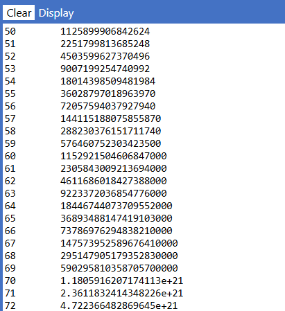
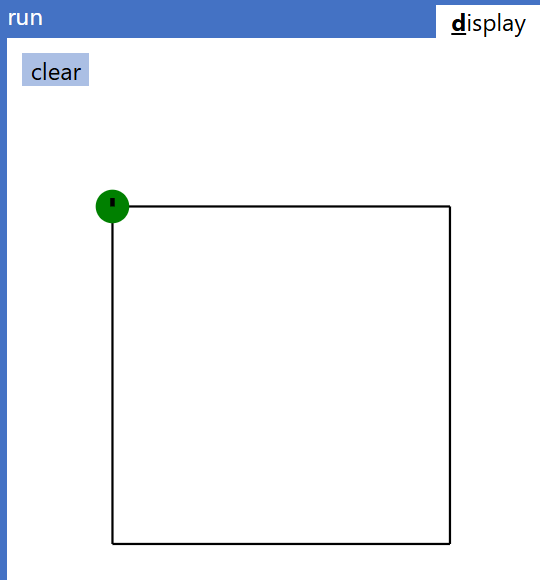
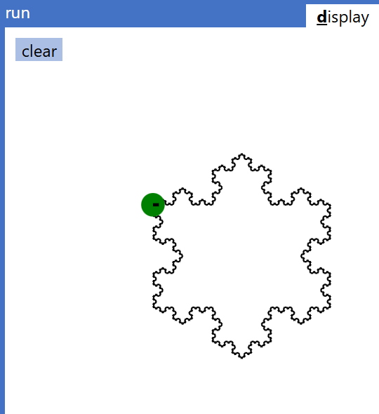
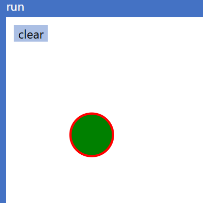
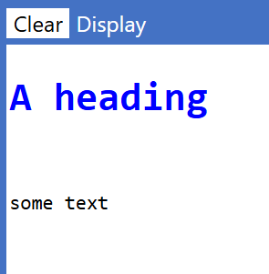
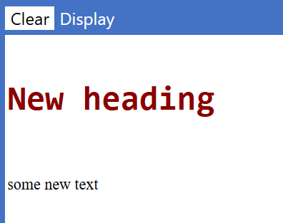

An integer is a whole number, i.e. one that has no fractional part. It may be represented in decimal, hexadecimal or binary:
Its Type is Int.
| name of Type |
examples of defining a literal value |
|---|---|
Int |
constant maxNumber set to 10 |
Int |
variable flags set to 0b1100100 |
Int| function dot method |
argument Types |
return Type |
returns |
|---|---|---|---|
| (none) | String |
string of binary digits representing the argument's integer value | |
Int |
Boolean |
– |
|
Int |
Boolean |
– |
|
| (none) | String |
a string of decimal digits representing the argument's integer value |
Int may
always be passed into a function or procedure that is expecting a Float.Int type is intended to represent whole numbers
in the range:▶ This code calculates 2 raised to the power of 50 through 72, and its output is shown below:

A floating point number is a decimal number (also known as a Real number) that may have both integer and fractional parts.
It may be written using exponential (scientific) notation, e.g.
Float.
| name of Type |
examples of defining a literal value |
|---|---|
Float |
constant phi set to 1.618033988749895 |
Float |
variable reading set to 1.1e-10 |
Float| function dot method |
argument Types |
return Type |
returns |
|---|---|---|---|
| (none) | Int |
the first integral value larger than or equal to the argument's floating point value |
|
Float |
Boolean |
– |
|
| (none) | Int |
the first integral value smaller than or equal to the argument's floating point value |
|
| (none) | Boolean |
– |
|
| (none) | Boolean |
– |
|
Float |
Boolean |
– |
|
Int |
Float |
the value rounded (up or down as appropriate) to the number of decimal places specified in the argument |
|
| (none) | String |
a string representing the argument's floating point value |
Float may not be passed as an argument into a method that requires an Int,
nor as an index into a List even if the variable contains no fractional part.
It may, however, be converted into an Int before passing, using the function Float, but initialise it with an integer value, then add variable hour set to 3.0Int may always be used where a Float is expected.Float ▶ Test assertions using dot methods on a Float:
A Boolean value is either
The keywords
| name of Type |
examples of defining a literal value |
|---|---|
Boolean |
variable done set to true |
Boolean| function dot methods |
argument Types |
return Type |
returns |
|---|---|---|---|
Boolean |
Boolean |
– |
|
Boolean |
Boolean |
– |
|
| (none) | String |
String "true" if "false" if |
A String represents text, i.e. a sequence of zero or more characters.
| name of Type |
examples of defining a literal value |
details |
|---|---|---|
String |
constant title set to "Ulysses" |
delimited by double quotes |
String |
variable quote set to "'Hello', she said" |
' may be used in a string delimited by " |
String |
variable emptyString set to "" |
a zero-length, or 'empty', string |
When typing from the keyboard into a literal string all the basic ASCII characters (0x20 to 0x7e) and '£' can be input.
You cannot use Alt+numeric-keypad to enter accented letters or other special characters in the extended ASCII range (0x80 to 0xff).
You can, however, copy any text from outside Elan and paste it into a string, whether ASCII, extended ASCII or UTF-8 encoded.
To insert a character from the full range, you use its Unicode (codepoint) value, in decimal or hexadecimal, by means of function
|
|
⟶ | Spanish introduces a question with ¿ |
|
|
⟶ | This is an up arrow: ↑ |
These examples 'interpolate' the output of function
Strings can be built from other strings by concatenation using the plus operator, for example:
call print("Hello " + "world")
| ⟶ | Hello world |
A newline may be inserted within a string with
| call print("Hello\nworld") | ⟶ | Hello world |
When editing and you leave the field, the newline will be implicitly applied in your code.
As in most languages, strings are immutable. When you apply any operation or function with the intent of modifying an existing string, the existing string is never changed. Instead, the operation or function will return a new string that is based on the original, but with the specified differences.
You can loop through a string picking each of its characters sequentially using the
String| function dot method |
argument Types |
return Type |
returns |
|---|---|---|---|
| (none) | RegExp |
a new string that is a a converted to a regular expression: no check is made of whether the result is a valid regular expression |
|
| (none) | Int |
the Unicode value of the first character of the string (To convert a Unicode value into a string, use function |
|
| (none) | Boolean |
– |
|
String |
Boolean |
– |
|
String |
Boolean |
– |
|
String |
Int |
index of the first instance of the argument (substring) within the string If it is not present, -1 is returned |
|
String |
Boolean |
– |
|
String |
Boolean |
– |
|
String |
Boolean |
– |
|
String |
Boolean |
– |
|
| (none) | Int |
the number of characters in the string | |
| (none) | String |
a new string with the original rendered in lower case | |
RegExp |
Boolean |
– |
|
String, String |
String |
a new string with all occurrences of the first argument string replaced by the second argument string | |
String |
List<of String> |
a List of the substrings found between occurrences of the argument stringif the argument is the empty string then the list is of all the individual characters |
|
Int, Int |
String |
a new string that is the substring specified by the two positive integers (m,n) where m indexes the first character of the substring required (counting from 0) and n indexes the character after the last character required (exclusive index) if m ≥ n the result is the empty string |
|
| (none) | String |
the string itself | |
| (none) | String |
a new string with leading and trailing spaces removed | |
| (none) | String |
a new string with the original rendered in upper case |
Strings support interpolation, that is you can insert the values of variables or simple expressions within the string by enclosing them in curly braces and prefixing the string with a $:
If a and b have values 3 and 17:
| ⟶ | 3 times 17 equals 51 |
If velocity and fuel have values 3.0 and 50.4:
⟶ |
LANDED SAFELY AT SPEED 300 FUEL 50 |
And, for the area of a circle:
⟶ |
area = 12.57 |
Elan has two mutable data structure Types List and Dictionary, and
three immutable data structure Types HashSet, Stack and Queue.
The contents of these structures are referred to as items (or sometimes elements).
The values of items in a mutable structure may be changed directly by calling the various procedure dot methods defined for each structure Type.
The values of items in an immutable structure cannot be changed directly, and so have no procedure dot methods defined for them: rather, the methods called on them create new copies of the structures containing specified changes.
Since procedure methods may be called only from within the
Immutable data structures are intended specifically to facilitate the Functional Programming paradigm, but some are also useful within other programming paradigms.
All six contain values (and keys in the case of a Dictionary) of only a single Type, that Type being specified either explicitly (as in
<of ), or implicitly if the structure is created using a literal definition.Int>
This table summarises the creation and reference to these structures. Details of their methods follow.
| List | Dictionary | HashSet | Stack | Queue | |
|---|---|---|---|---|---|
| mutability | Mutable | Mutable | Immutable | Immutable | Immutable |
| Type form | List<of List for 'jagged' data |
Dictionary<of Int, Float, String or Boolean |
HashSet<of |
Stack<of |
Queue<of |
| size | Dynamic | Dynamic | Dynamic | Dynamic | Dynamic |
| literal definition | [2, 3, 5, 7, 11] |
["a":3, "b":5] |
Only as converted from a literal Liste.g. ["a","b","c"]. |
Not available | Not available |
| create empty | new |
new |
new |
new |
new |
| create initialised | Not available | Not available | Not available | Not available | |
| read by index | li[2] |
d["b"] |
not available | not available | not available |
| read by index range | li.lower bound is inclusive from 0 upper bound is exclusive |
not available | not available | not available | not available |
| procedure methods to mutate contents | see Procedure methods on a List | see Procedure methods on a Dictionary | not available | not available | not available |
| function dot methods | see Function dot methods on a List | see Function dot methods on a Dictionary | see Function dot methods on a Set | see Function dot methods on a Stack | see Function dot methods on a Queue |
The List Type defines a data structure containing n items of any single Type,
including basic value Types, structure Types such as List,
and user-defined Types such as a Class.
Items in a List of n items are indexed from 0 to n-1.
To create a List, use either of:
variable aList set to createList(10, "no one")variable aList set to new List() call aList.initialise(10, "no one")call aList.append("4")The item at index
set aList[ix] to "Smith"A List's size can be dynamically changed using the procedure methods listed below.
A List may be split (deconstructed) into new named values using indexes and
the methods
variable headItem set to myList[0]set heatItem to myList.head()
variable tailList set to myList.tail()set shortList to myList.subList(1,5)
In all these cases the items indexed must exist, else a runtime error will stop the program.
Understood as a grid, a 2D array is a List of 'columns' each of which is a List of 'row' items, i.e. it is a List of Lists in which the column number is the x coordinate, and the row number is the y coordinate.
To create a 2D array that holds a value of a single Type in every cell, you define such a List of Lists thus:
variable array2D set to createListOfLists(cols, rows, value)variable grid set to createBlockGraphics(value)The item at index
variable value set to array2D[ix][iy]set array2D[ix][iy] to 7For a 3D array, you can, for example, define:
variable array3D set to new Listand refer to a cell using three indexes in square brackets.
ListWhere an argument provides a new value for an item in a List, that value must be of the same Type as defined for the List's items.
| procedure method |
arguments | action |
|---|---|---|
value of List item's Type |
the item is added to the end of the List | |
List |
the argument List is added to the end of the List | |
Int,value of List item's Type |
specify the number (> 0) of items in the List, and an initial value for every item. May be called at any time to redefine the List's size and initial values. |
|
Int,value of List item's Type |
the item is inserted at the index given. If the index is negative it is counted from the end If the index is greater than the list's length, the item is inserted at the end |
|
value of List item's Type |
the item is is added to the start of the List | |
List |
the argument List is added to the start of the List | |
value of List item's Type |
delete all items equal to the given item | |
Int |
delete the item at the argument index | |
value of List item's Type |
delete the first item equal to the given value |
List| function dot method |
arguments | return Type |
returns |
|---|---|---|---|
| (none) | HashSet |
a new Set containing all the unique items in the List | |
| value | Boolean |
– |
|
List |
Boolean |
– |
|
List |
a new List obtained from applying a lambda to the input List see |
||
| (none) | List item's Type |
the first item of the List (i.e. index = 0, which must exist) | |
value of List item's Type |
Int |
the index of the first occurrence of the argument value in the List, or -1 if no match is found |
|
|
String |
a single String that joins all the items in the list, with the specified String (which can be empty) inserted between the items |
|
| (none) | Int |
the number of items in the List | |
List |
a new List obtained from applying a lambda to the input List see |
||
List item's Type |
the list item corresponding to the maximum of the values returned by a lambda see |
||
List item's Type |
the list item corresponding to the minimum of the values returned by a lambda see |
||
List |
Boolean |
– |
|
List |
a new list with the items ordered according to the value returned by a lambda | ||
item of List item's Type, |
return Type of lambda | the final value obtained by applying a lambda cumulatively to each item in the input List taking account of the first argument as an initial (and default return) value see |
|
Int, Int |
List |
a new list that contains the items specified by the two positive integers (m,n) where m indexes the first item of the list required (counting from 0) and n indexes the item after the last item required (exclusive index) if m ≥ n the result is the empty list | |
| (none) | List item's Type |
all items except the first item in the List (i.e. index = 1..n, which must exist) | |
| (none) | String |
a String that is a comma+space-separated list of the List's items, enclosed in square brackets | |
item of List item's Type |
List |
a new List lengthened with the item added after the end | |
List of same Type |
List |
a new List lengthened by appending the given List | |
Int,value of List item's Type |
List |
a new List with the item inserted after the item at the given index position | |
value of List item's Type |
List |
a new List lengthened with the item added before the beginning | |
List of same Type |
List |
a new List lengthened by prepending the given List | |
Int,value of List item's Type |
List |
a new List with the item replacing that at the given index | |
value of List item's Type |
List |
a new List with items equal to the given item removed | |
Int |
List |
a new List with the item at the given index removed | |
value of List item's Type |
List |
a new List with the first item equal to the given item removed |
A Dictionary is like a List whose items are pairs but, instead of having a numeric index, each item has a key plus an associated value. The Dictionary is a set of key:value pairs.
The key's Type must be one of Int, Float, String or Boolean.
The values may be of any Type. The Types of both keys and values are fixed when the Dictionary is created.
Dictionary| procedure method |
argument Types |
action |
|---|---|---|
| key's Type | delete the key:pair at the given key (if it exists) |
Dictionary| function dot method |
argument Types |
return Type |
returns |
|---|---|---|---|
Dictionary |
Boolean |
– |
|
| item of Dictionary key's Type | Boolean |
– |
|
| (none) | List |
a List containing the keys | |
Dictionary |
Boolean |
– |
|
| (none) | String |
a string that is a comma+space-separated list of the Dictionary's key:value pairs, enclosed in square brackets | |
| (none) | List |
a List containing the values | |
| item of Dictionary key's Type, item of Dictionary value's Type |
Dictionary |
a new Dictionary with the value replacing what was at the specified key | |
| item of Dictionary key's Type> | Dictionary |
a new Dictionary with the key:value pair removed from the specified key |
A HashSet (also referred to merely as a Set) is a standard data structure containing Set members, that works somewhat like a List with two important differences:
HashSet has the same value as an existing member in the Set then the Set remains the same as before.HashSet are not indexed: two Sets with the same contents but defined in a different sequence, can still be compared correctly with methods HashSet that is based on the original Set or Sets with specified differences.This enables a Set to work like a mathematical set so that it is possible to perform standard set operations such as
When creating a HashSet, the Type of its members must be specified in the form
HashSet.
You can add members: individually with HashSet from an existing List by calling
Example of creating a Set from a literal List and changing its content:
variable st set to new HashSet<of Int()set st to st.addFromList([3, 5, 7])call print(st.length()) |
⟶ | 3 |
set st to st.add(7)call print(st.length()) |
⟶ | 3 |
set st to st.remove(3)call print(st.length()) |
⟶ | 2 |
set st to st.remove(3)call print(st.length()) |
⟶ | 2 |
call print(st) |
⟶ | [5, 7] |
HashSet| function dot method |
argument Types |
return Type |
returns |
|---|---|---|---|
| value (of HashSet members' Type) |
HashSet |
a new Set extended with the item, provided it differs from all of the Set's current members | |
List |
HashSet |
a new Set extended with those items from the List that are not already in the Set | |
| (none) | List |
a List containing the Set's members as List items | |
| value (of HashSet members' Type) |
Boolean |
– |
|
HashSet |
HashSet |
a Set containing those members of the Set that do not occur in the argument Set | |
HashSet |
Boolean |
– |
|
HashSet |
Boolean |
– |
|
HashSet |
HashSet |
a Set containing those members common to both the Set and the argument Set | |
HashSet |
Boolean |
– |
|
HashSet |
Boolean |
– |
|
HashSet |
Boolean |
– |
|
| (none) | Int |
the number of members of the Set | |
| value (of HashSet members' Type) |
HashSet |
a new Set with the argument item removed (if present) | |
| (none) | String |
a string that is a comma+space-separated list of the Set's members, enclosed in brackets | |
HashSet |
HashSet |
a Set containing all the unique members of the Set and the argument Set (i.e. no duplicates) |
Stack and Queue are similar data structures except that Stack is 'LIFO' (last in, first out), while Queue is FIFO (first in, first out). The names of the methods for adding/removing are different, but there are also common methods.Stack and a Queue are defined with the Type of the items that they can contain, similarly to how List has a specified item Type, though with different syntax. The Type is specified in the form shown below e.g. Stack<of StringQueue<of Int>, Stack<of (Float, Float)>, Queue<of Square>List. There is no need (or means) to specify a size limit as they will continue to expand until, eventually, the computer's memory limit is reached.Stack or Queue into a function, or specify it as the Stack and Queue have two methods in common: Stack and Queue, as shown here:Stack| function dot method |
argument Types |
return Types |
returns |
|---|---|---|---|
Stack |
Boolean |
– |
|
Stack |
Boolean |
– |
|
| value (of Stack item's Type) |
Stack |
the Stack with the value added to its top | |
| (none) | Stack item,Stack |
the topmost item of the Stack, and the Stack with the item removed | |
| (none) | Stack item |
the topmost item on the Stack (without altering the Stack) | |
| (none) | Int |
the number of items in the Stack | |
| (none) | String |
a String that is a comma+space-separated list of the Stack's items, enclosed in square brackets, the last item pushed being the first in the String |
Queue| function dot method |
argument Types |
return Types |
returns |
|---|---|---|---|
Queue |
Boolean |
– |
|
Queue |
Boolean |
– |
|
| value (of Queue item's Type) |
Queue |
the Queue with the item added to the end of the Queue | |
| (none) | Queue item,Queue |
the next item in the Queue, and the Queue with the item removed | |
| (none) | Queue item |
the next item in the Queue (without altering the Queue) | |
| (none) | Int |
the number of items in the Queue | |
| (none) | String |
a String that is a comma+space-separated list of the Queue's items, enclosed in square brackets, the first item enqueued being the first in the String |
Stack and Queue ▶ Results of Stack:
|
|
⟶ ⟶ ⟶ ⟶ ⟶ ⟶ ⟶ ⟶ ⟶ |
0 3 [cherry, banana, apple] cherry (cherry, [banana, apple]) [cherry, banana, apple] cherry [cherry, banana, apple] [banana, apple] |
▶ Results of Queue:
|
|
⟶ ⟶ ⟶ ⟶ ⟶ ⟶ ⟶ ⟶ ⟶ |
0 3 [apple, banana, cherry] apple (apple, [banana, cherry]) [apple, banana, cherry] apple [apple, banana, cherry] [banana, cherry] |
A Tuple is not a value or data structure Type. Rather, it is a small collection of values
of differing Types held together and referenced by a single identifier.
It may be considered a lightweight alternative to defining a Class for some specific purpose.
The items in a Tuple may be literal or named values.
Tuples are referred to as 2-Tuples, 3-Tuples, etc. according to the number of values they hold.
An item within a Tuple may be another Tuple, giving nested Tuples.
A function may return a Tuple.
A Tuple differs from a List in that:
List, can you copy a Tuple
from an existing one with specified differences except by referencing each of its items (see below).Common uses include:
Float) as a single unit.String and a Boolean indicating whether the operation was successful.TupleA new Tuple is defined by a list of items separated by commas and enclosed in round brackets:
variable point set to (3, 4)
variable t set to (3, "apple", true)
TupleThe items in a tuple may be individually addressed by a dot reference and its special properties
|
|
⟶ ⟶ ⟶ ⟶ |
(3, apple, true) 3 apple true |
And where p1 and p2 represent points each with 2-Tuples containing two Float values, this function returns the distance between them:
Note that the appropriate
Tuple| function dot methods |
argument Types |
return Type |
returns |
|---|---|---|---|
Tuple |
Boolean |
– |
|
Tuple |
Boolean |
– |
|
| (none) | String |
String containing Tuple's items surrounded by brackets |
Block graphics provides a simple way to create low resolution graphics, ideal for simple but engaging games for example.
The graphics are defined and displayed on a grid that is 40 blocks wide by 30 blocks high.
Each block is be rendered as a solid colour.
An example of block graphics to produce a rapidly changing pattern of coloured blocks:
List<of List<of Int>> structure
containing 40 columns × 30 rows.List<of List<of Int>> structure of the same
40 × 30 dimensions can be the argument to method Int, as described under Colours.Turtle graphics are implemented with output to the IDE's display pane, i.e. the 'paper' on which the turtle draws.
The area is 200 turtle units wide by 150 turtle units high, and both integer and floating point values of turtle units can be used. If a turtle is placed or moved outside the 200 × 150 area boundary, it will not cause an error, but the turtle and any lines drawn outside the boundary will not be visible.
The origin for turtle units (0,0) is at the centre of the area: positive x rightwards, positive y upwards. So the top left corner of the display is at (-100,75).
A new turtle's default starting position is at (0,0) facing upwards (
You can move and turn a turtle, causing lines to be drawn, whether or not the turtle is showing.
| procedure method |
argument Types |
action |
|---|---|---|
| (none) | clears the turtle display and moves the turtle to its starting position and heading | |
| (none) | makes the turtle invisible in the display | |
Int or Float |
moves the turtle the specified number of turtle units in the direction of its heading or, if negative, in the opposite direction |
|
Int or Float,Int or Float |
moves the turtle to the specified x,y position, drawing its path if its pen is down | |
Int |
changes the colour of its path in the display to the literal or named value specified | |
| (none) | makes the turtle's subsequent moves leave a trace of its path in the display | |
| (none) | makes the turtle's subsequent moves leave no trace of its path in the display | |
Int or Float |
changes the width of the line tracing the turtle's path in the display default (and minimum) is 1 |
|
Int or Float,Int or Float |
places or repositions the turtle at the x,y position specified without drawing a path | |
| (none) | makes the turtle visible in the display as a green blob marked with a black radius that indicates its heading |
|
Int or Float |
turns the turtle through the specified number of degrees clockwise or, if negative, anticlockwise |
|
Int or Float |
turns the turtle to face in the direction specified in degrees where 0 is upward and increasing values go clockwise from there |
The current location and heading of the turtle may be read using the properties
| Property | |||
|---|---|---|---|
| name | Type | description | default |
Float |
the direction in which the turtle is pointing in degrees clockwise from North |
0.0 degrees, i.e. upward in the display |
|
Float, Float |
the x,y coordinates of the turtle's current position | 0.0, 0.0 | |
▶ To draw a square:

▶ To draw a fractal snowflake, using a procedure and recursion:

Vector graphics are implemented using the SVG (Scalable Vector Graphics) Html tag <svg>, and are output to the display pane in the user interface.
The area is 100 units wide by 75 units high, and both integer and floating point values of the units can be used.
The origin of the units (0,0) is at the top left corner of the display: positive x rightwards, positive y downwards. So for example the centre of the display is at (50, 37.5).
The names of the shapes broadly correspond to the names of SVG tags:
CircleVG for <circle../>ImageVG for <image../>LineVG for <line../>RectangleVG for <rect../>The properties of these shapes are named to reflect the attributes used in the SVG tags but some names differ. For example, SVG's stroke-width
is set with property stroke and fill are set by the properties
In addition, graphics may be displayed from any valid string of SVG tags, as described in RawVG.
A set of SVG shapes is defined in either a List<VectorGraphic> or a List of any specific Type of VectorGraphic (e.g. List<CircleVG>) by using the List
VectorGraphic is the abstract superclass of all ..VG shapes. You use it when you want to define a List holding different types of shape.
Adding a shape returns a new instance of the list which must be assigned to a new or existing variable.
The constructors for the VG Types require arguments defining the attributes of the relevant SVG tags, so defaults are supplied from the Class properties, as shown in the table below.
To change the value of property 'p..', call the
The
Note that the
As with Block graphics, the assembled list of shapes is not displayed until call procedure
And as with using SVG in Html, the shapes are drawn in the order in which they are added to the VectorGraphic instance.
Later shapes are positioned in front of earlier ones.
| function dot method |
on Type |
argument Types |
return Type |
returns |
|---|---|---|---|---|
ImageVG |
none | string containing the Html |
||
CircleVG |
none | string containing the SVG |
||
ImageVG |
none | string containing the SVG |
||
LineVG |
none | string containing the SVG |
||
RectangleVG |
none | string containing the SVG |
This table lists the properties of the Vector graphic shapes and their default values, together with the procedure and function methods provided to alter their values in a given instance.
| Property | Vector graphic shape | Property | Method | ||||||
|---|---|---|---|---|---|---|---|---|---|
| name | Type | CircleVG | ImageVG | LineVG | RectangleVG | description | default | procedure | function |
String |
✔ | alternate textual description (for accessibility) | empty string | ||||||
Float |
✔ | horizontal position of circle centre | 50 | ||||||
Float |
✔ | vertical position of circle centre | 37.5 | ||||||
Int |
✔ | ✔ | colour to fill the shape | ||||||
Float |
✔ | ✔ | height to render the shape or the image | Image: 13.2 Rectangle: 20 |
|||||
Float |
✔ | radius of circle | 10 | ||||||
Int |
✔ | ✔ | ✔ | colour of the strokes in the shape | |||||
Int |
✔ | ✔ | ✔ | width of the strokes in the shape | 1 | ||||
Float |
✔ | title text | empty string | ||||||
Float |
✔ | ✔ | width to render the shape or the image | Image: 13.2 Rectangle: 40 |
|||||
Float, Float |
✔ ✔ | ✔ ✔ | image's x,y position from top left | Image: 0, 0 Rectangle: 10, 10 |
|||||
Float, Float |
✔ ✔ | line's starting x,y position from top left | 10, 10 | ||||||
Float, Float |
✔ ✔ | line's ending x,y position from top left | 70, 40 | ||||||
▶ To draw a circle with a coloured circumference:

▶ To draw a circle that changes between red and green every second:
RawVGStrings containing raw SVG tags may be assembled and plotted directly using Class RawVG.
By this means features such as simple SVG animation can be defined.
RawVG may be added to the collection to be displayed, along with instances of other SVG Types;
hence the need for list-defining square brackets in the parameter of method RawVG that must contain the SVG string.RawVG▶ To display a repeating movement of a circle:
Program outputs, whether text or graphical, can be combined in the display. In particular, Block graphics and text or Html printing can share the display along with either Vector graphics or Turtle graphics (but not both).
If you want to share the display in this way, remember that both text and Html print outputs appear sequentially down the display (which can be scrolled), whereas the graphic outputs are positioned in the display using their own absolute coordinate systems.
The order in which the outputs are displayed (and therefore overwrite) is:
So some care is needed to manage the layout in the display.
Note that, while vector graphics are being drawn, printed text that exceeds the height of the display does not scroll until the graphic completes.
RandomIt is not possible to use the system methods Int or a Float) as an argument into a function.
It is, however, possible to create and use random numbers within a function, but it requires a different approach and is a little more complex. You use the special Type Random. (Note the upper case R required for a Type name).
You start by getting a seed random number in your
Then, in a function, you apply the dot method Random passed in, which returns a 2-Tuple containing both a new random value and a new instance of Type Random.
If you need another random value, you use the returned Random on which to apply the dot method again.
Avoid applying Random because they will return the same values.
If the Random without so initialising, however, can be extremely useful for testing purposes since the results are repeatable.
| procedure method |
argument Type |
action |
|---|---|---|
| (none) | uses the system clock to provide a seed from which to generate fresh random values |
Random| function dot method |
argument Types |
return Types |
returns |
|---|---|---|---|
| 2-Tuple: ( |
random Float value in the range of the arguments, andnew instance of Random for subsequent use |
||
| 2-Tuple: ( |
random Int value in the range of the arguments, andnew instance of Random for subsequent use |
Random▶ To roll a dice in a function:
A function may be passed as an argument into another function (or a procedure), or returned as the result of calling another function. This pattern is known as Higher-order Function (HoF), and is a key idea in Functional Programming.
To define a function that takes in another function as a parameter, or returns a function, you need to specify the Type of the function, just as you would specify the Type of every parameter and the return Type for the function.
The Type of any function starts with the word Func followed by angle brackets defining the Type of each parameter,
then a 'fat arrow' => and the return Type for that function. This
This example defines the Type for a function that defines three parameters of Type String, String, and Int respectively, and returns a Boolean value. This Type would match that of a function definition like this:
This section covers a variety of input and output facilities:
soliciting and retrieving keyboard input requires using these system methods:
| system method |
argument Types |
return Types |
action |
|---|---|---|---|
| (none) | String |
returns the last character last pressed on the keyboard during program execution | |
| (none) | 2-Tuple: ( String, String) |
returns the last key combination pressed on the keyboard: the key pressed and the modifier key's name (if also pressed) |
|
| (none) | String |
returns either the numeric key last pressed or, if the last pressed key was not numeric, then "-1" |
|
String |
String |
prints the string as a prompt, and returns the typed input when Enter is pressed | |
String, Int, Int |
String |
prints the string as a prompt and returns the typed input when Enter is pressed provided the length of the response is within the minimum and maximum limits specified. If it is not, the prompt is repeated with the relevant limit displayed |
|
String, |
String |
prints the string as a prompt and returns the typed input when Enter is pressed provided it is one of the options in the list. If it is not, the prompt is repeated with the options displayed |
|
String |
Int |
prints the string as a prompt and returns the value of the typed input when Enter is pressed provided that it is an integer. If it is not, the prompt is repeated with an error message |
|
String, Int, Int |
Int |
prints the string as a prompt and returns the value of the typed input when Enter is pressed provided that it is an integer with a value in the (inclusive) range. The first range value must be less than or equal to the second |
|
String |
Float |
prints the string as a prompt and returns the value of the typed input when Enter is pressed provided that it is a number. If it is not, the prompt is repeated with an error message |
|
String, Int, Int |
Float |
prints the string as a prompt and returns the value of the typed input when Enter is pressed provided that it is a number with a value in the (inclusive) range. The first range value must be less than or equal to the second |
|
| (none) | String |
pauses execution of the program until a key is pressed on the keyboard, and returns either a character or the name of a non-character key |
In some applications – especially in games, for example – you want the program to react to a key pressed by the user, but without holding up the program to wait for value to be input.
Whether your application makes use of graphics, or uses the display just for text, reading keystrokes 'on the fly' is done via one of the three methods shown here:
String or Tuple."z" or "@"."0".."9") or, if the last key pressed was not numeric, then "-1".
A digit will be returned if the key pressed was either from the main keyboard, or from the numeric keypad when NumLock is on."Shift",
"Ctrl" or "Alt" if simultaneously pressed.
If no modifier had been pressed, the Tuple's second item will be the empty string. Note that a few such modified keys will be acted on by the browser and may not then be passed to your program."Home", "End", "Delete", "Tab",
"Backspace", "Enter", "Escape",
"ArrowUp" etc., function key "Fn", "AltGraph", "Meta", "ContextMenu", as well as most others.Reading or writing a text file requires that you open (for reading) or create (for writing) a file using these system methods:
| system method |
argument Types |
return Class |
action |
|---|---|---|---|
| (none) | TextFileReader |
opens a file system dialog to choose the filename of filetype .txt to be read,
and returns a file handlesee Reading text files |
|
String |
TextFileWriter |
sets up a buffer for the data to be output, and specifies a filename (or the empty string)
with or without the default filetype of .txt, and returns a file handlesee Writing text files |
The TextFileReader Class is used to read text data from a file with type extension .txt.
An instance is created by the system method
The available procedure methods are:
| procedure method |
argument Type |
action |
|---|---|---|
| (none) | reads the next substring from the file that is terminated with a newline | |
| (none) | reads the whole file and closes the file | |
| (none) | returns – otherwise |
|
| (none) | closes the file |
These methods may be used to read a whole file in one go:
openFileForReading will present the user with a dialog to select the file.readWholeFile returns a String containing every character in the file, without any trimming. It automatically closes the file after the read.readLine reads as far as the next newline character (\n) and then automatically trims the line to remove any spaces and/or carriage-returns (which some file systems insert after the newline automatically) from the resulting line returned as a String. If this behaviour is not desired, you can use readWholeFile, which does no trimming, and then parse the resulting String into separate lines.file.close after reading line by line is strongly recommended to avoid any risk of leaving the file locked. It is not necessary to call it after using readWholeFile because that method automatically closes the file.The TextFileWriter Class is used to write textual data to a file.
An instance is created by the system method
The available procedure methods are:
| procedure method |
argument Type |
action |
|---|---|---|
String |
writes the string to the buffer | |
String |
writes the string to the buffer and then outputs the buffer to the file system | |
| none | writes the buffer to the file system |
These methods may be used to write a whole file in one go:
writeLine adds the string it is passed onto the end of any data previously written, with a newline character (saveAndClose you will be presented with a dialog to confirm (or edit) the given filename and location where it is to be saved. It is not therefore strictly necessary to specify a filename when creating the file, since it can be specified by the user in the dialog so, in that case, you might put the empty string "" into the parameter of createFileForWriting.writeWholeFile puts the string it is given into the file and then automatically saves the file, so the user will be presented with the same dialog as if saveAndClose had been called.saveAndClose or by writeWholeFile) will result in a runtime error.ElanRuntimeError is a Class provided by Elan for this purpose):If you embed Html code in a string and then attempt to print it, you will see the string displayed literally: the Html tags will not be recognised. This is for security reasons. However, it is possible to display formatted Html in the display. The following code:
will produce:

This Html forms another 'layer' in the IDE's display pane. Any plain text that you print
(using
You can clear just the Html layer in the display using the procedure
For specifying style or other attributes within Html tags, the attribute values should be enclosed in single quotation marks ' as shown above.
Html will recognise single or double quotation marks, but entering double quotation marks would terminate the Elan string.
Alternatively, you could use the constant
You can also specify a <style> tag at the start of your Html string, to apply to the whole Html being displayed. In this case you would put the style definition into a named value as a literal but enclosed in single quotes, for example:
will produce:

An image that can be retrieved with an http or https URL may be sent to the display, though note that other URI schemes, such as in file://host/path to access an image from your local file system, are not supported. Here are two techniques:
The usual <img> tag attributes are respected, though alt does not give the expected tooltip when hovering over the image, and title is only a descriptive comment.
ImageVG definition, set properties by calling vector graphic procedures, then call the method The
Int)Int)Float)Note that the volume parameter is only relative in that the actual volume will be modified by the various sound settings on the output device, and may even be muted.
▶ An example that plays a C major scale first ascending then descending:
Click on a Type to go to the Type's function dot methods, or on to go to the specific method on that Type.
| Dot method | Value Type | Reference Type | Tuple | |||||||
|---|---|---|---|---|---|---|---|---|---|---|
Int |
Float |
Boolean |
String |
List |
Dictionary |
HashSet |
Stack |
Queue |
||
| note 2. | | |||||||||
| | | note 4. | | |||||||
| | | | | | | | | | | |
| note 2. | | |||||||||
| | | |||||||||
| note 2. | | |||||||||
| note 2. | | |||||||||
| | | note 3. | | | | |||||
| | | | | | | | | | | |
| | | |||||||||
| note 2. | | |||||||||
| | | | | | | | | | | |
| | | |||||||||
| | | |||||||||
Float values, but they can accept Int values without raising an error.Dictionary can be found by applying method call print(dict.keys().length()) ⟶ 15Dictionary can be
done by applying method call print (dict.keys().contains("widget"))⟶true or false |
call print (dict.values().contains(42))⟶true or false |
All procedures are accessed via a call statement.
| procedure | input argument Types | output argument Types | action |
|---|---|---|---|
| (none) | (none) | clears the IDE's display pane | |
| (none) | (none) | clears the block graphics layer of the IDE's display pane | |
| (none) | (none) | clears the vector graphics layer of the IDE's display pane | |
| (none) | (none) | clears the Html layer of the IDE's display pane | |
| (none) | (none) | clears display pane as well as the blocks, vector graphics and Html layers | |
| (none) | (none) | clears the IDE's keyboard input | |
Boolean |
(none) | pauses execution of the program until a keyboard key is pressed if the argument is if |
|
String |
(none) | prints the string to the display followed by a newline | |
String |
(none) | prints the string to the display without appending a newline so a following call will output on the same line. You can put your own |
|
| (none) | prints the string to the display starting at the tab position given (from 0) without appending a newline |
||
Int |
(none) | pauses the execution of the program for the specified number of seconds, e.g. for a game sleep(1.5) delays execution for 1.5 seconds |
|
Int |
(none) | pauses the execution of the program for the specified number of milliseconds, e.g. sleep(100) delays execution for one tenth of a second |
▶ Procedure
|
|
⟶ ⟶ ⟶ ⟶ ⟶ |
Hello 12 3 times 4 equals 12 [using interpolated strings] [defining a 2-Tuple] true 42 |
▶ Procedure
▶ For numeric output, it is preferable to right-align the columns, e.g. when listing powers of 9: :
Procedures applicable to standard Reference Types are linked from:
User-defined Classes may have procedures that can be applied to their Class instances.
These methods may be referenced from within a function.
Standalone library functions always return a value and are therefore used in contexts that expect a value, such as in the right-hand side of a
Standalone library functions require at least one argument to be passed (in round brackets), corresponding to the parameters defined for that function.
| system method |
argument Types |
return Types |
returns |
|---|---|---|---|
String |
Boolean, Float |
a 2-Tuple in which the first item is – and, if Float value, otherwise zero |
|
String |
Boolean, Int |
a 2-Tuple in which the first item is – and, if Int value, otherwise zero |
|
Int |
String |
a string containing the one character defined at the given Unicode code point |
▶ Deconstructing the 2-Tuple returned by
variable success set to parseAsInt(s).item_0
variable value set to parseAsInt(s).item_1
Always check the Boolean (
▶ Test assertions that use methods
Int will also parse as a Float. ▶ Using method
call print(unicode(0x2665)) | ⟶ | ♥ |
All the maths functions expect Float arguments, but Int arguments are accepted.
They all return a value of Type Float, except for Int.
| function | argument Type | input unit | returns | output unit |
|---|---|---|---|---|
Float | absolute value of the input | |||
Float | arccosine of the input | radians | ||
Float | arcsine of the input | radians | ||
Float | arctangent of the input | radians | ||
Float | radians | cosine of the input | ||
Float, Float | first input value divided by second input value | |||
Float, Float | first input value divided by second input value and result rounded down to integer | |||
Float |
𝑒𝑥 where 𝑥 is the argument and 𝑒 is Euler's number 2.718281828459045.. the base of natural logarithms |
|||
Float | natural logarithm of the input | |||
Float | base-10 logarithm of the input | |||
Float | base-2 logarithm of the input | |||
Float | radians | sine of the input | ||
Float | positive square root of the input | |||
Float | radians | tangent of the input | ||
Float | degrees | converts input from degrees to radians | radians | |
Float | radians | converts input from radians to degrees | degrees |
Examples of some maths functions and constants being tested:
These functions take in an integer value, and manipulate the bit representation of that value.
| function | argument Types |
return Type |
returns |
|---|---|---|---|
Int |
integer whose binary representation is the bitwise AND of the inputs | ||
Int |
integer whose binary representation is the bitwise OR of the inputs | ||
Int |
Int |
integer whose binary representation is the bitwise complement of the input | |
Int |
integer whose binary representation is the bitwise XOR of the inputs | ||
Int |
integer bit shifted to the left by the value of the second argument, i.e. multiplied by 2 to the power of the second argument |
||
Int |
integer bit shifted to the right by the value of the second argument, i.e. divided by 2 to the power of the second argument |
▶ Examples of the bitwise functions being tested
The result of -14 , when a is 13, might be a surprise. But this is because the bitwise functions assume that the arguments are represented as 32-bit signed binary integers. So 13 is represented as00000000000000000000000000001101, and applying 11111111111111111111111111110010 which is the value -14 in signed two's complement format,
the left-most bit being the sign (0 positive, 1 negative).
▶ A reminder of single bit operations.
As noted in the example tests above, these methods act on 32-bit signed integers rather than on values of only one or a few bits,
so the effect of
| p,q | ||||
|---|---|---|---|---|
| 0,0 | 0,1 | 1,0 | 1,1 | |
bitAnd(p,q) | 0 | 0 | 0 | 1 |
bitOr(p,q) | 0 | 1 | 1 | 1 |
bitNot(p) | 1 | 1 | 0 | 0 |
bitXor(p,q) | 0 | 1 | 1 | 0 |
Elan's regular expressions are modelled on those of JavaScript, including the syntax for literal regular expressions. See, for example this Guide to Regular Expressions.
More functions for using regular expressions will be added in a future release of Elan. For now:
The method String using dot syntax and requires a RegExp parameter specified as a literal or as variable. It returns a Boolean. For example:
You can convert a valid string without /../ delimiters to a RegExp using function
Although it is recommended that literal regular expressions are written with /../ delimiters, the ability to convert a string allows you to input a regular expression into a running program.
System methods appear to work like functions, because:
They are not, however, pure functions because:
Because of these properties, system methods maybe used only within the
You cannot write a system method yourself.
Random.
| system method |
argument Types |
return Types |
returns |
|---|---|---|---|
| (none) | Int |
the current value (in milliseconds) of a system clock. Useful for measuring elapsed time by comparing the values returned by two calls |
|
| (none) | Float |
a random number in the range [0..1] | |
Int, Int |
Int |
a random number in the (inclusive) range between the two arguments |
These methods are pure functions and so may be referenced in your functions as well as in procedures:
| system method |
argument Types |
return Types |
returns |
|---|---|---|---|
| named value of any Type | same Type as argument | a copy of the named value | |
Int,value of List item's Type |
List<of item's Type> |
a List containing the specified number of items each initialised to the value in the second argument | |
Int, Int,value of List item's Type |
List<of List<of item's Type>> |
a List of length the first argument containing that number of Lists each initialised to a List of length the second argument with each item therein initialised to the value in the third argument |
|
List<of Int> orList<of Float> |
Int orFloat |
the maximum value found in the List | |
List<of Int> orList<of Float> |
Int orFloat |
the minimum value found in the List | |
Int, Int |
List |
a List containing the integers from the first argument to one less than the second argument. If the second argument is not greater than the first, then the empty List is returned |
|
Int, Int, Int |
List |
a List containing the integers from the first argument to one less than the second argument in increments specified by the third argument. If, however, the third argument is negative, the second argument must be less than the first, and the integers returned will run from the first to one more than the second |
▶ and which uses Higher-order Functions to print the prime numbers between 2 and 30:
A higher-order function (HoF) is one that takes in a reference to another function as a parameter, or (less commonly) that returns a reference to another function as its result.
The standard library contains several HoFs that are widely recognised and used within functional programming, namely
To use a higher-order function (HoF), you have to pass in a reference to a function.
This can be either a
On most occasions when you write the name of an existing function elsewhere in code your intent is to evaluate the function and, to do so, you write the name of the function followed by round brackets containing such arguments as are required by the function. When passing a function, its name is not followed by round brackets (or arguments), as in this example:
System constants are unlike values that you define in your program
These constants are of use when the characters { } and " are required within a string.
| name | Type | value |
|---|---|---|
String |
{ |
|
String |
} |
|
String |
" |
| name | Type | value |
|---|---|---|
Float |
𝜋 = 3.141592653589793.. |
| name | Type | value |
|---|---|---|
Boolean |
||
Boolean |
| colour | decimal | decimal | hexadecimal | |
|---|---|---|---|---|
| name | integer | R G B | 0xrrggbb | |
| ◼ | 0 | 0 0 0 | 0x000000 | |
| ◼ | 16777215 | 255 255 255 | 0xffffff | |
| ◼ | 16711680 | 255 0 0 | 0xff0000 | |
| ◼ | 32768 | 0 128 0 | 0x008000 | |
| ◼ | 255 | 0 0 255 | 0x0000ff | |
| ◼ | 16776960 | 255 255 0 | 0xffff00 | |
| ◼ | 10824234 | 165 42 42 | 0xa52a2a | |
| ◼ | 8421504 | 128 128 128 | 0x808080 | |
| ◻ | -1 | n/a | n/a |
A colour is specified as an Int value using one of these methods:
0x000000 – 0xffffff
using the same 'RGB' format as used in Html style, for example 0xff0000 for red.These dot methods are called on any List, or String. As Higher-order Functions they take either a
These are not yet fully documented but, for readers familiar with HoFs from another programming language, some examples are shown below.
You give a List to the higher-order function List containing a subset of items.
The subset is chosen by a lambda function that tests list item values and returns a Boolean to specify filtering in or out.
▶ Example from demo program pathfinder.elan in which Node) to find one that contains Point):
The function List, and return a new List.
The function to be applied is usually specified as a
▶ To cube each integer value in a list:
▶ To change each string in a list to upper case:
▶ To reverse each string in the list of names using the function
▶ And this example from demo program maze-generator.elan:
The function
The result may, however, be of a different Type than the items in the list, and may even be a data structure, for example to:
Method
Float, the initial seed value
would typically be ▶ To reduce the floating point values in a List to their sum:
List of floats is valid provided it is not the first value. ▶ To reverse the order of items in a List:
▶ To reverse the order of the words in a String,
use List of words (created by
List.
They take a function as an argument, and return the list item corresponding to the maximum or minimum of the values returned by the function.
For simply finding the maximum or minimum value in a List, you can use
▶ To find in a list the integer that has the highest last digit:
▶ To find in a list the the shortest string:
List items to be re-ordered
and compares them, returning a Boolean value that distinguishes between less than (or greater than) for numerics and before (or after) for strings.
▶ To reorder integers in a List, using > for ascending (you would use < for descending):
▶ To reorder strings in a List, using method
Elan Library Reference go to the top